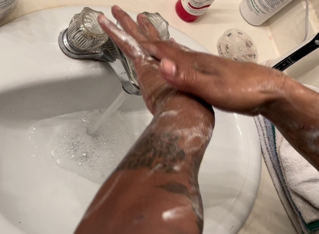
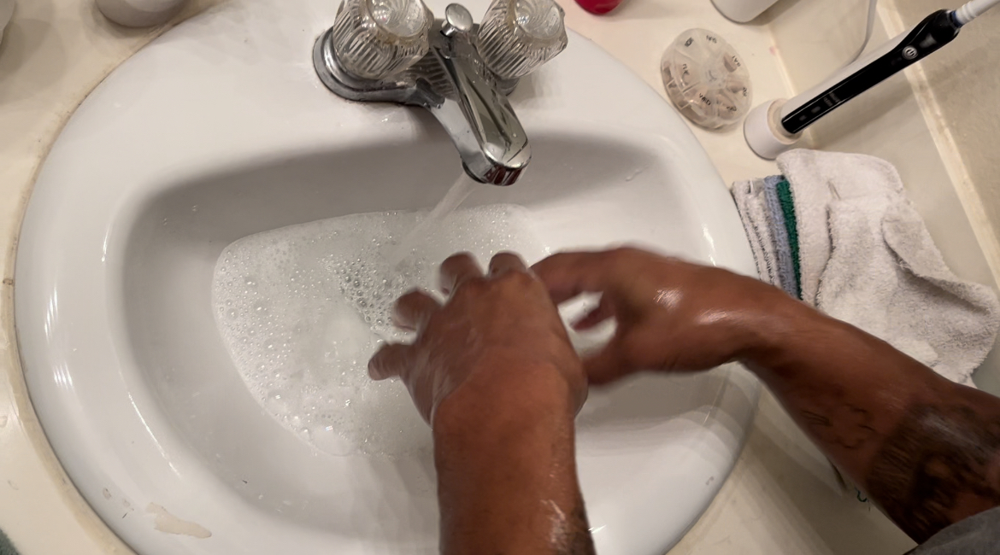
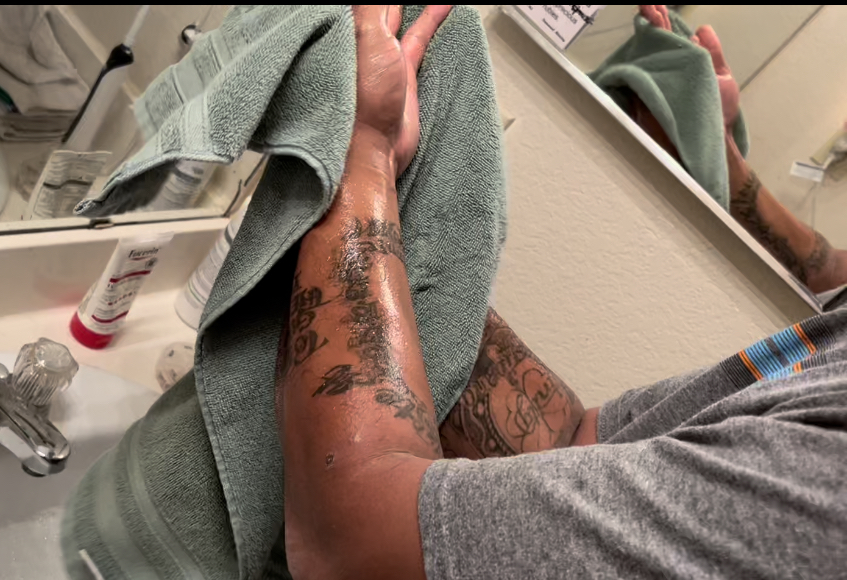

Quick Steps:
- Wet & Apply Soap
- Lather
- 20 sec Scrub
- Rinse
- Dry
Step 1: Wet the hands with clean, running water, either warm or cold, and apply soap.
Make sure you have the water at a comfotable degree so that you do not burn yourself. Get your hands completely wet and then apply soap.
Step 2: Lather the hands by rubbing them together with the soap. Lather the backs of the hands, between the fingers, and under the nails.
Scrub every part of your hand that you can. The front,back, inbetween your fingers and under your nails.

Step 3: Scrub the hands at least 20 seconds.
You can count to 20 or sing the Happy Birthday song to yourself and that shoudl conclude the 20 seconds needed to get every part of your hands.

Step 4: Rinse the hands under clean running water.
Make user to rinse off all soap.
Step 5: Dry the hands with a clean towel or air-dry them.
To air dry is preferred but times do not always allow you the time to do so. Make sure you use a clean dry towl or paper towel to dry your hands.
